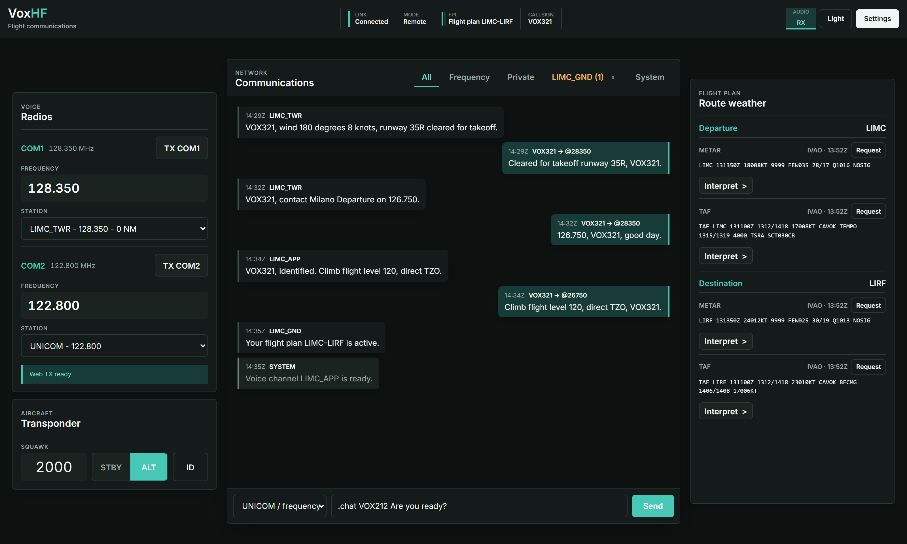
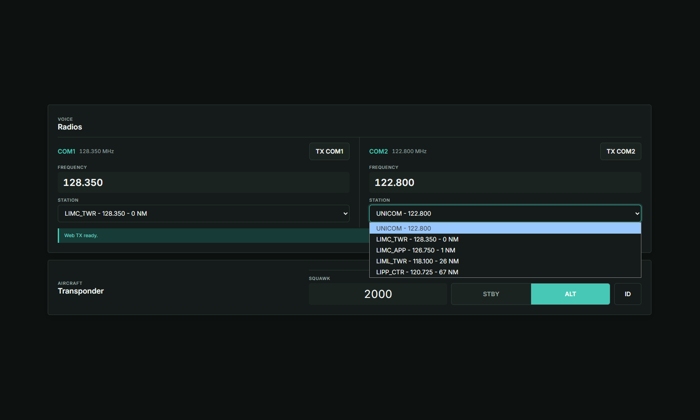
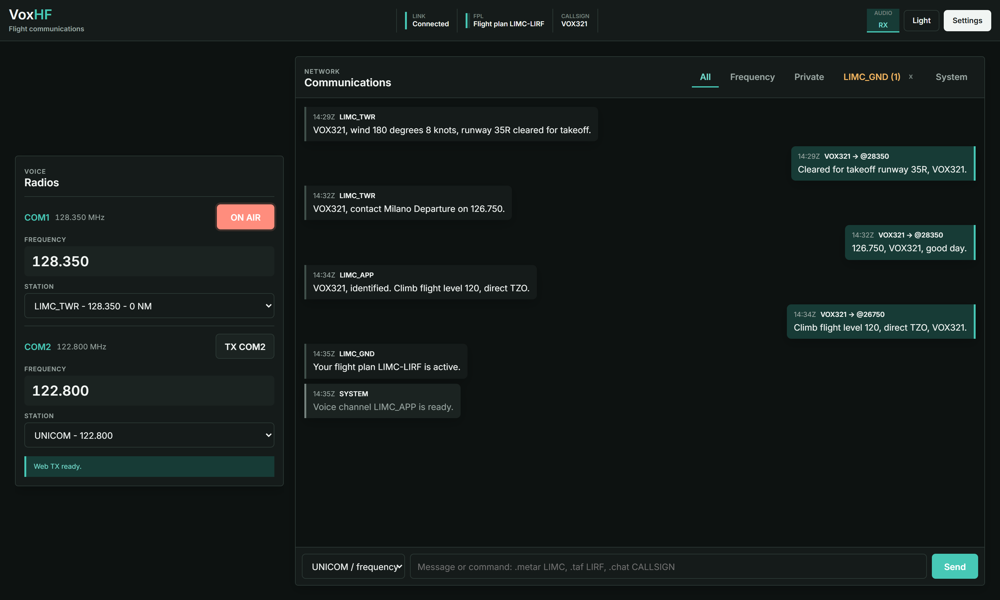
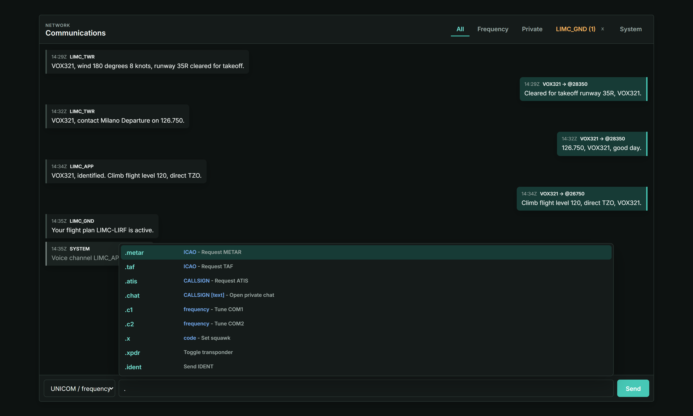
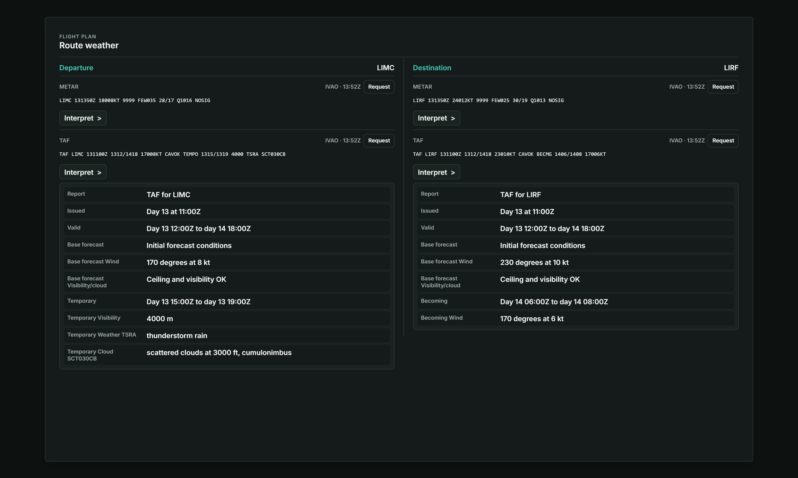

Radio and transponder
Tune one active frequency on COM1 or COM2, transmit, and control squawk, STBY/ALT and IDENT.
In active developmentPublic beta
Your IVAO communications, wherever you need them.
A local-first browser console for radio, live voice, transponder controls, weather and network messages. Altitude stays on the simulator PC while the controls follow you to another screen.

Core controls
Tune one active frequency on COM1 or COM2, transmit, and control squawk, STBY/ALT and IDENT.
Keep messages, nearby stations, route weather and the controls used during a live flight together.
Keep the IVAO connection on your simulator PC and choose whether the browser stays local or uses your relay.
Inside VoxHF
Each view is reserved for one core workflow, so the final screenshots can show the product clearly instead of shrinking the entire interface into every frame.




How it works
It connects to PilotUI, PilotCore, IVAO FSD and the TS2 voice service on the simulator PC.
Use the local address, connect to an existing server or point the agent at a relay you host.
Altitude remains authoritative while VoxHF mirrors state and sends only allowlisted controls.
Local by design
The browser never connects directly to IVAO. The optional relay only carries authenticated state, commands and live audio between the local agent and trusted browsers.
Choose your setup
Start locally with no account, connect through a server you trust, or run the complete stack under your control.
No account and no external server. Open VoxHF directly on the simulator PC.
Reach your local agent from another trusted device or network through an existing server.
Operate the webapp, relay, account database and administration tools yourself.
Project status
Local and remote COM, XPDR, messaging, weather, browser RX and microphone TX.
Clean installation, VPS recovery, compatibility checks and broader security review.
Independent review, beta feedback and stabilization toward a release candidate.
Questions
No. Altitude and PilotCore retain the IVAO connection. VoxHF adds a browser control and communications surface around them.
Yes. Local Slim requires no account, relay or public network access.
Yes. The operator provides the app address and account access. Review the operator before trusting an independent server.
Default installations relay live audio and messages without recording voice or maintaining persistent full chat history. Independent operators control their own deployments.
No. VoxHF is independent, unofficial and not affiliated with or endorsed by IVAO.
Open development
Review the source, follow the roadmap and help validate the current beta builds.